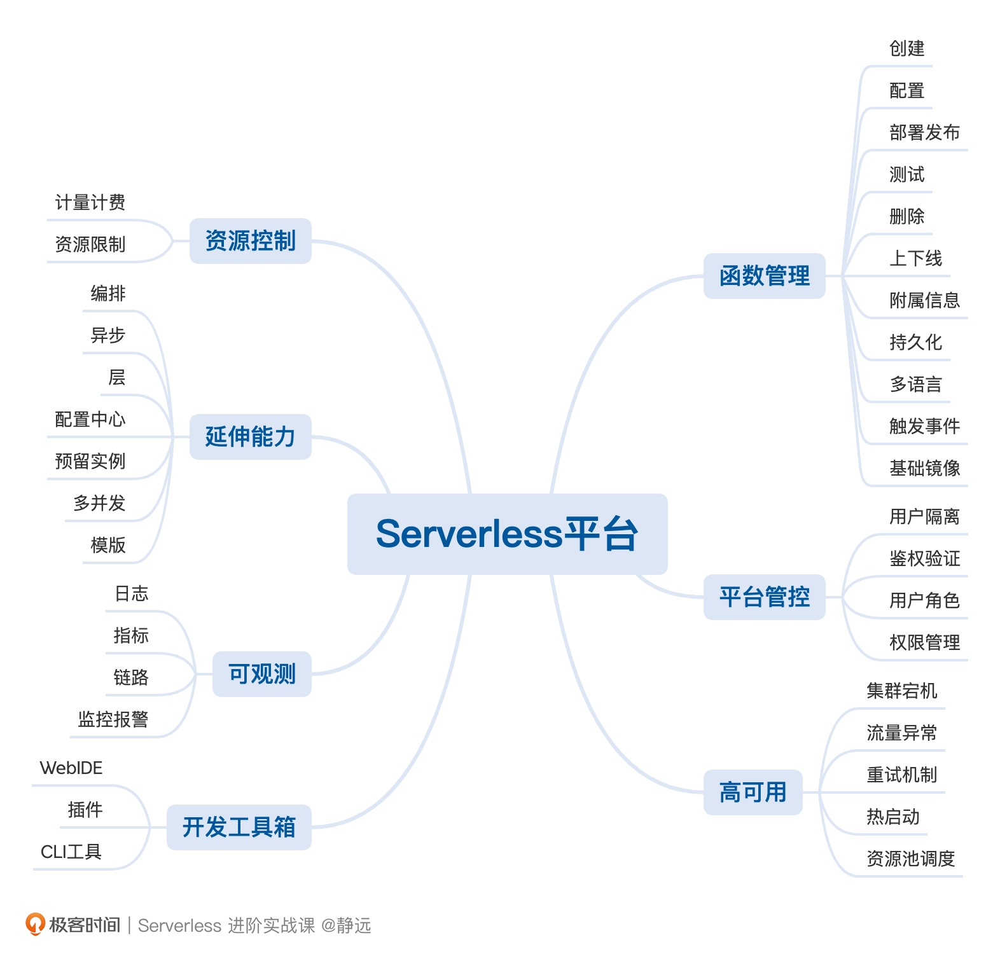
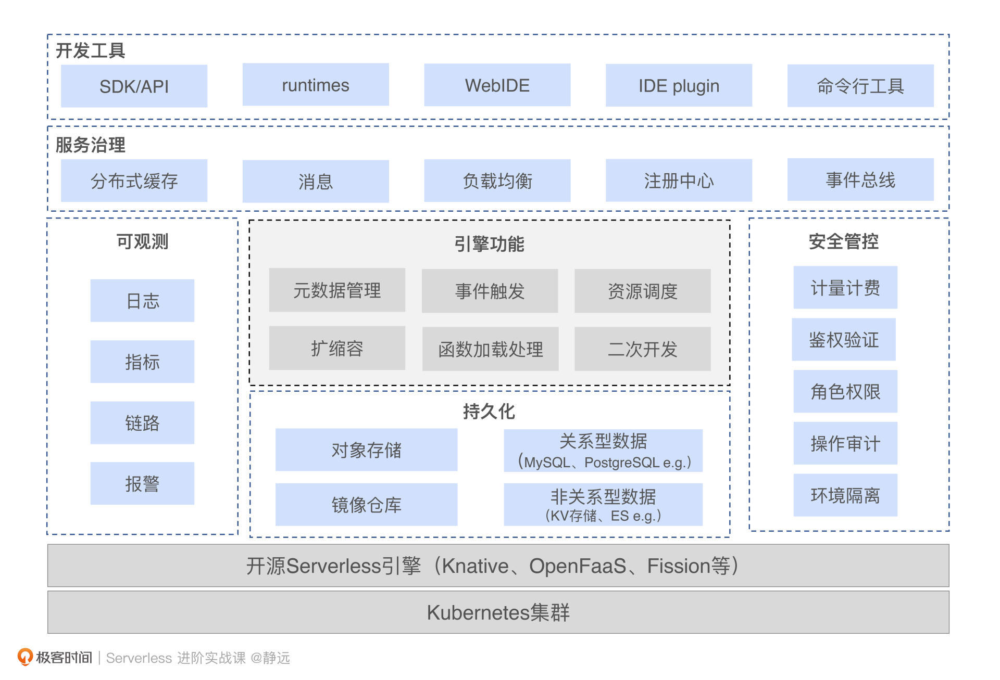
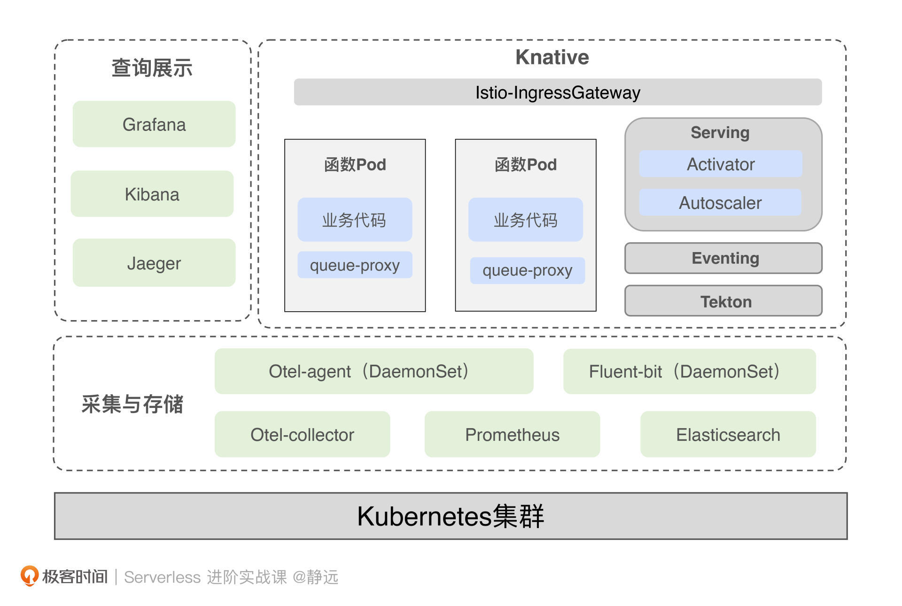
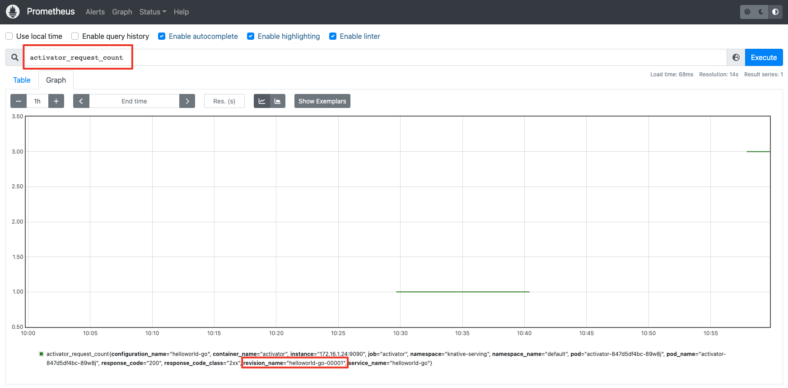
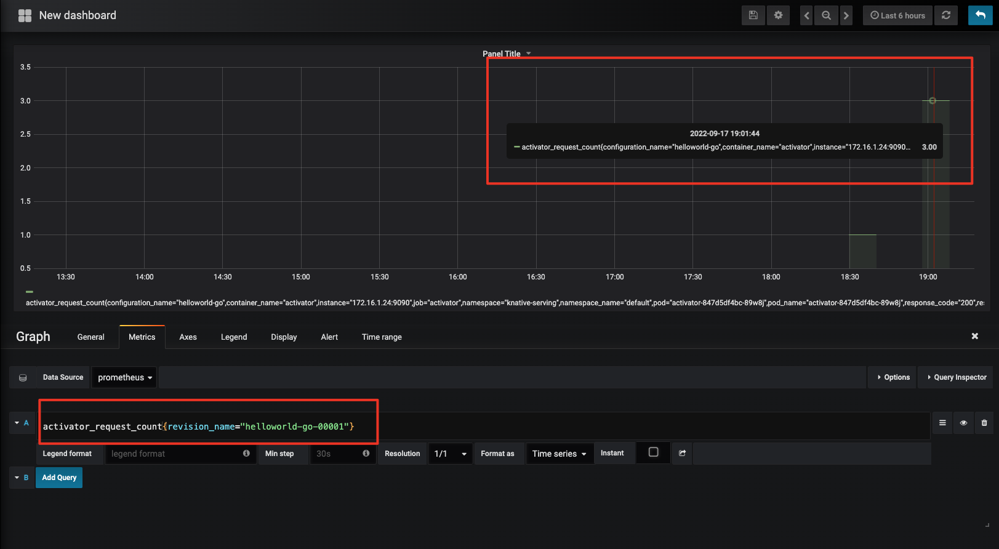
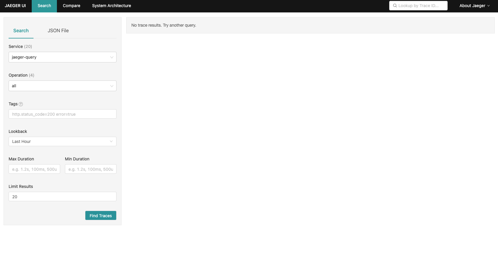
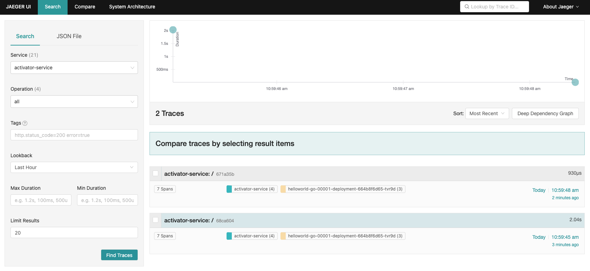
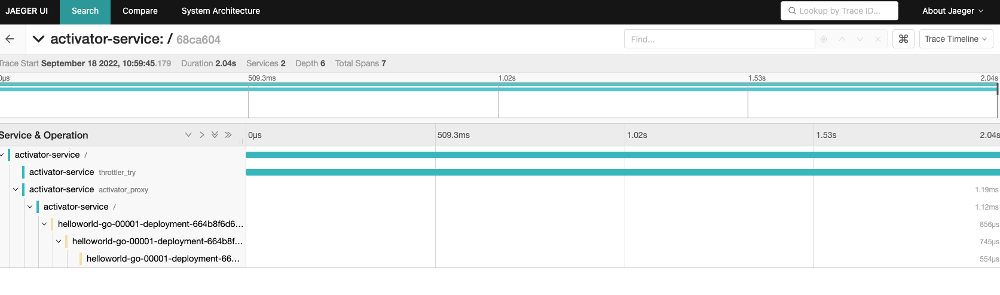

- 00 开篇词 Serverless是降本增效浪潮下的必然选择.md.html
- 00 思维构建 如何在新赛道下进阶Serverless能力？.md.html
- 01 生命周期：函数计算的基本流程是如何执行的？.md.html
- 02 触发器：如何构建事件源与函数计算的纽带？.md.html
- 03 高级属性：应对生产级别的应用，你需要掌握哪些技能？.md.html
- 04 冷启动：如何加快函数的第一次调用过程？.md.html
- 05 扩缩容：如何应对流量的波峰波谷？.md.html
- 06 流量转发：函数在不同情形下是如何执行的？.md.html
- 07 运行时（上）：不同语言形态下的函数在容器中是如何执行的？.md.html
- 08 运行时（下）：不同语言形态下的函数在容器中是如何执行的？.md.html
- 09 小试牛刀（一）：如何利用函数之间的调用解决业务问题？.md.html
- 10 小试牛刀（二）：如何突破VPC网络的速度限制？.md.html
- 11 WebIDE：如何让函数远离繁琐的本地开发模式？.md.html
- 12 编排：如何协调多任务的运行？.md.html
- 13 可观测（上）： 如何构建多维度视角下的Serverless监测体系？.md.html
- 14 可观测（下）： 如何构建多维度视角下的Serverless监测体系？.md.html
- 15 选型：不同阶段的数据应如何存储？.md.html
- 16 动手体验（一）：如何实现业务高效率地开发上线？.md.html
- 17 动手体验（二）：如何在云函数场景下实现一个有状态的服务？.md.html
- 18 实战指南：Serverless沙场老兵的一线使用经验.md.html
- 19 实战进阶（一）：Serverless “连接器” 的能力到底有多大？.md.html
- 20 实战进阶（二）：如何基于智能音箱开发一个BOT技能？.md.html
- 21 实战进阶（三）：传统的服务如何迁移到Serverless平台？.md.html
- 22 私有云：赛马时代的Serverless核心引擎谁能胜出？.md.html
- 23 实战进阶（四）：如何从0到1进阶一个开源引擎？.md.html
- 24 实战进阶（五）：如何从Serverless引擎蜕变成一个Serverless平台？.md.html
- 结束语 在实战中把握事物本质，不断革新.md.html
- 捐赠
24 实战进阶（五）：如何从Serverless引擎蜕变成一个Serverless平台？
你好，我是静远。
我在前两节课详细介绍了私有化Serverless核心引擎的特性和选型方法，并基于当前盛行的Knative引擎进行了部署。相信现在的你，已经可以玩转Serverless底座了。
但仅仅研究核心引擎是远远不够的，和构建Serverless平台还有一定的距离。今天这节课，我将在引擎底座的基础上，继续围绕“私有化”这个主题，来跟你详细讲解如何基于一个Serverless 引擎底座构建完整的平台。
希望通过这节课的学习，你能够具备构建一个平台的能力，也让你在选择“最合适”的ToB厂商共建Serverless平台的时候更加得心应手。
定位：引擎和平台有什么不同？
我们先来明确一下Serverless下“引擎”与“平台”的侧重点。
一个引擎或者框架的目标更多的是提供一个具有特定功能的系统或者架构，比如Knative、OpenFaaS、Fission等开源的Serverless引擎，都是提供一个FaaS形态产品运行的系统。
对于一个引擎的研究和部署，你甚至不需要任何业务和架构的经验，通过官网的介绍通读一遍，然后按照使用文档就可以很快地搭建一个Serverless系统来做测试、实验了。但并不能直接在企业的生产线上使用，它还缺少权限管控、元信息管理、BaaS集成等能力。
而平台则需要考虑到生产级别中遇到的实际问题。从开始设计到完全投入生产使用，需要经过整体的规划设计、迭代升级，从内测到公测，再到完全开放的过程，服务过程中还需要考虑给用户承诺的SLA等等，这就需要设计者具备较为丰富的业务领域经验、架构设计能力以及中长期的规划迭代思维。
公有云和私有云的平台，虽然在展现形态上不太一样，比如公有云需要适配云厂商的容器服务、IAM、云产品联动、多租户等，私有云需要适配企业自身的容器底座、中间件、各类BaaS服务等，但他们的思想是一样的：私有云的Serverless平台，主要享受到了对平台的控制权和安全把控，只是将云厂商维护的工作转嫁到了企业的运维团队而已。唯一不同的是，私有云可能不太关心业务用户的计费问题。
那么，在构建一个Serverless平台的时候，我们需要考虑哪些方面呢？
如何构建Serverless平台？
基于用户、平台、函数的关系，我从安全性、易用性、可运维、可扩展性的角度，整理出了7个核心要点来介绍。

整体平台以容器为底座，构建于Kubernetes集群之上，而我们的核心引擎可以选择上节课介绍的Serverless引擎框架，或者自研引擎也是可以的。我们分别说一下每个功能的注意要点。
函数管理
一般开源引擎都会自带部分的函数管理能力，比如通过CLI的方式来对函数进行CRUD，也有一些引擎框架也集成了部分的Console操作能力。但不管是可视化界面还是CLI的操作性，都达不到一个生产级别的要求。
从函数自身管理角度看，需要集成函数的创建、配置、部署发布、测试、删除、上下线功能，并且支持底层资源规格的选取。
从函数代码开发角度看，需要提供多种函数语言的开发（如Java、Python、Node.js、Golang等），区别于函数计算引擎自带的模板和函数语言支持，平台更需要易用性，比如代码包的上传部署、持久化存储以及常用触发器的适配集成等等。
除此之外，还有最容易忽视的一点，那就是由于企业操作系统的不同，我们在制作函数计算基础镜像的时候，也得考虑不同操作系统版本不一致的问题。
平台管控
这部分的功能包括了用户的隔离、鉴权验证、用户角色、权限管理。这几大功能都是跟安全分不开的。我们一个一个来说。
- 用户隔离：不仅包括了函数实体管控上的命名空间、并发度设置和持久化存储的隔离，还包括运行容器的隔离；而容器方面，你需要考虑追加一层安全容器或者基于Node节点来分配，这两种模式，我在扩缩容这节课对比过，可以复习一下，加深记忆。
- 鉴权验证：通常和企业的公共IAM系统对接，但如果从高可用角度出发，你可以设计两套系统，一套企业IAM系统正常访问模式，一套是本地系统的IAM应急模式。
- 用户角色和权限管理：目前主流的权限管理系统的设计大都基于RBAC模型或者是RBAC的变形，可以复用你之前设计微服务系统的经验。
资源控制
这个功能也可以放到平台管控里面，单独讨论是为了强调平台的另一个重要特性：计量计费。针对公有云和私有云，不同的特点在于公有云面向的是外部的众多客户，云厂商以营收为主，不仅计量还需要计费，那作为Serverless平台就需要对接企业的计费系统。而对于私有云来说，更多的是企业内部使用，计量的重要性更多一些，计费并不是一个非常急迫的功能。
第二个特性在于对资源的使用限制。比如对实例的内存、CPU、GPU的使用，在单个地域的最大使用量，都是平台需要考虑的点。
开发工具链
一套好的开发工具，不仅可以使得开发调试部署更加方便，而且还更有利于老的服务迁移到新的技术平台中来，这才是设计新平台的初衷。
那么除了Serverless引擎自带的CLI 命令之外，我们还应该开发一套满足自身企业的CLI命令工具应对通用的开发，WebIDE工具应对在线快速开发，IDE集成插件应对习惯于类似VSCode的开发人员。
高可用
企业一般会在服务器宕机、流量异常、同步/异步失败、冷启动、扩缩容等方面提出要求。我们发现，除了冷启动和扩缩容属于Serverless的特有特征之外，其他的方面和我们在微服务治理中的知识点是一样的。
总的来说，我们可以通过多AZ的部署、异地备份等方式来解决。通过引入服务治理中间件（如断路器、注册中心等）来解决流量的异常调度、同步请求失败等问题，但异步调用失败需要结合中间件来处理。回想一下，我们之前提到的异步调用，平台就需要延迟加载重试等策略方式来保证用户的请求可靠。
至于冷启动和扩缩容，可以再回过头复习一下，相信你就有答案了。
到这里，一个Serverless平台的主干功能其实就差不多了。但如果要用的“爽”，你还得具备可观测、编排、异步调用、层、模板、单实例多并发、预留实例的能力，这个核心能力的实现和使用，是不是都可以从前面的课程中找到答案呢？

接下来，我将在上节课的基础上，结合可观测的知识点，跟你详细梳理一遍设计一个Serverless平台的步骤。
可观测功能的构建
可能你会想：为什么是可观测的角度？首先，可观测几乎引入的是开源组件，跟某一个企业或者业务耦合程度很低，便于你理解和实操。其次，可以把之前可观测学习到的理论知识点在这里通过平台视角演练一下。
在可观测课程里，我跟你提到了可观测中的三大要素：指标、链路、日志，但只掌握这三大要素还远远不够，你还可以从以下5个方面进一步考虑，完善可观测的构建，查漏补缺。
- 明确收集的数据：无论是指标、链路还是日志，都应该明确我们需要什么样的数据，而不是毫无目的地将所有数据收集上来，每一种类型都应该从平台运维和用户关心两个维度去考虑。比如指标应该包含用户关心的调用次数、执行时长，还要包括各个实例的资源使用情况等。
- 组件的选型：组件的引入最好是从一些成熟的产品中选择，我个人建议使用一些CNCF推荐且较为成熟的产品，比如Prometheus、fluent-bit等。除此之外，你也需要考虑到组件引入时的学习成本和后期的运维工作，一些可观测组件尽管功能丰富，但熟悉和部署的过程就需要花费上大量的时间。
- 资源成本：可观测的组件也需要占用一部分资源，像Logstash这种强大的日志清洗组件，可能单个实例就需要消耗几个G的内存，而可观测的数据落盘还需要用到较大的存储空间。这些都需要结合具体的资源预算进行评估。如果预算足够，你完全可以使用公有云上的服务，免去后期的组件维护工作。
- 适配问题：像金融、电信等企业，为了提高系统的安全性，操作系统往往是Kylin这一类国产操作系统，并且有自己的一套PaaS底座，因此为了适配PaaS底座，可能还需要对这些可观测组件进行二次开发，这也是在选型阶段需要考虑到的问题。
- 后期的扩展能力：可观测组件的扩展能力也需要在设计之初就考虑进来，这需要你对整个平台后期的使用量有一个长期的判断。比如Prometheus就可以考虑采用联邦集群的部署方式，毕竟如果后期有明显的增长，单点部署就会遇到瓶颈。
在开始实战之前，你可以先看一下整体的架构示意图，涵盖了基于Knaitve围绕三大支柱构建可观测的解决方案。接下来，我们来分别看一下具体的实现路径。

指标
首先明确收集的指标数据。在12讲中，我从平台与用户两个视角提出了调用次数、执行时长、资源使用情况等具体的细项，而Knative引擎已经提供了部分指标收集的支持，包括业务指标和模块指标。
其中业务指标会由queue-proxy提供，包括revision_request_count、revision_request_latencies、revision_app_request_count等5种与业务紧密相关的指标数据。
在模块指标方面，我们可以收集Activator、Autoscaler、Controller等上报的指标数据，这其中包括与整体冷启动并发相关的Activator级别的并发量统计，以及和当前资源使用情况相关的函数pod数量等。
那我们要用什么组件收集呢？这里我推荐采用Prometheus。原因有两点：
- 第一，Knative官方推荐Prometheus作为指标的收集工具，并且前面提到的模块都有各自的exporter用于上报，使用非常方便，
- 第二，Prometheus属于CNCF可观测系列中比较成熟的一款指标采集工具，社区也非常活跃，对于后期的维护工作非常有帮助。
指标的收集工具确定为Prometheus后，可视化工具推荐配套的Grafana，这二者几乎是默认关联在一起使用的，也是Knative官网的推荐。
链路
链路信息提供的是关键过程的耗时情况。对于Serverless 平台来说，最关键的两个阶段就是冷启动与业务代码整体的执行时长。
回到Knative，冷启动耗时包括从Activator接受到请求开始，直到用户容器和环境准备完成的过程，而业务代码的执行时长则为函数运行的整个时长。在采集的过程中，我们往往通过span的duration相减的方式来计算链路耗时。比如冷启动耗时通过Activator Service的Duration减去User Container执行完成的Duration就可以得到。
另外，除了经过Activator和User Pod 这两个节点，还需要考虑到对用户自定义链路的支持，即允许用户通过SDK的方式在函数内的关键路径上进行链路标记并上报。
链路的相关工具，我还是采用了Knative推荐的Opentelemetry和Jaeger 。其中Opentelemetry组件用于链路信息的收集与上报，Jaeger 用于链路信息的可视化。
可以看到上图中，我采用了DaemonSet部署Otel-agent（这里你也可以通过Sidecar或者SDK注入的方式进行部署），用于上报函数的tracing信息，然后通过Otel-collector进行采集，最后通过Jaeger-Query访问collector中的数据就可以查看了。这样就形成了一个完整的链路信息闭环。
日志
关于日志部分，Knative 官方推荐使用fluent-bit，主要是因为fluent-bit超快速、轻量级、高度可扩展，是容器化日志收集和处理的首选工具，同时可以对接ElasticSearch、Kafka等多种日志存储下游。
图上的整体日志处理流程采用的是fluent-bit，由ElasticSearch 负责存储，再由kibana进行可视化。
好，接下来我们就利用上节课搭建好的Knative，结合上面的设计方案进行实操。
可观测功能实战
我会通过搭建构成中的几个关键步骤带你一步步实操，其中主要讲解指标和链路这两个更为复杂的部分，学习完之后，关于日志的部分你也一定能举一反三，自己搭建起来。
指标
首先我们来搭建采集指标的相关组件。指标的可观测构建包括数据上报、Prometheus数据收集以及Grafana数据可视化三个部分。
其中前面提到的Knative引擎本身会暴露很多指标，像Serving中的Autoscaler、Activator等主要模块以及User Pod中的queue-proxy都实现了数据上报，并暴露了专门的端口供Prometheus采集。比如Activator的request_concurrency和request_latencies就是对请求并发情况和延迟的统计上报，这相当于Activator本身会作为一个exporter。
我以Activator为例演示一下关于Prometheus和Grafana的配置。首先，我们先根据Knative官网提供的config yaml 配置一个Prometheus的采集规则，其中，Activator 的采集规则如下：
# Activator pods
- job_name: activator
scrape_interval: 3s
scrape_timeout: 3s
kubernetes_sd_configs:
- role: pod
relabel_configs:
# Scrape only the the targets matching the following metadata
- source_labels: [__meta_kubernetes_namespace, __meta_kubernetes_pod_label_app, __meta_kubernetes_pod_container_port_name]
action: keep
regex: knative-serving;activator;metrics-port
# Rename metadata labels to be reader friendly
- source_labels: [__meta_kubernetes_namespace]
action: replace
regex: (.*)
target_label: namespace
replacement: $1
- source_labels: [__meta_kubernetes_pod_name]
action: replace
regex: (.*)
target_label: pod
replacement: $1
- source_labels: [__meta_kubernetes_service_name]
action: replace
regex: (.*)
target_label: service
replacement: $1
其中scrape_interval 和 scrape_timeout 分别表示抓取间隔和抓取数据的超时时间，而最重要的是第9行到第11行，定义了Prometheus是如何抓取Activator数据的。
source_labels表示数据的原始标签，regex表示与source_labels标签匹配的值，他们是一一对应的，最后，我使用action:keep表示保留下regex字段指定的标签。比如__meta_kubernetes_pod_label_app这个标签的值需要为Activator才能被抓取。
在这里，我们需要将configmap创建在knative-monitoring 这个命名空间下，如果没有的话，需要你提前创建：
kubectl create ns knative-monitoring
kubectl apply -f 100-scrape-config.yaml
接着，再通过200-prometheus.yaml创建Service、Deployment、Role等K8s资源：
kubectl apply -f 200-prometheus.yaml
执行成功之后，就可以看到在knative-monitoring下，有一个Prometheus的pod正在运行：
$ kubectl get pod -n knative-monitoring
NAME READY STATUS RESTARTS AGE
prometheus-system-0 1/1 Running 0 4d23h
然后，我们通过Prometheus 提供UI进行查看，如果你的K8s不是部署在本地的话，可以通过port-forward的方式进行本地端口映射，我们看一下Prometheus Service 暴露的端口：
$ k get svc -nknative-monitoring
NAME TYPE CLUSTER-IP EXTERNAL-IP PORT(S) AGE
prometheus-system-np NodePort 10.0.133.199 <none> 8080:30609/TCP 4d23h
可以看到暴露的端口是8080，然后我们通过port-forward 命令进行本地访问：
k -nknative-monitoring port-forward svc/prometheus-system-np 8080
打开localhost:8080后，可以进入Prometheus的主页。我们通过curl 命令访问上一节课部署的函数，并在Prometheus主页搜索activator_request_count这个指标。之后可以看到，Activator上报的指标已经被Prometheus采集上来了，这个指标的标签还会包含访问函数的revision name：

然后我们再按照相同的方式部署Grafana，你同样可以参考官方提供的grafana yaml：
kubectl apply -f 100-grafana-dash-knative-efficiency.yaml
kubectl apply -f 100-grafana-dash-knative.yaml
kubectl apply -f 100-grafana.yaml
需要注意的是，在100-grafana.yaml这个文件中，需要关联很多的configmap作为Grafana的视图配置，我这里只使用了grafana-dashboard-definition-knative-efficiency和grafana-dashboard-definition-knative 这两个与Knative 相关的，剔除了其他的configmap 配置。
配置完成后，还是进入knative-monitoring，可以看到已经有两个正在运行的pod 了：
$ kubectl get pod -n knative-monitoring
NAME READY STATUS RESTARTS AGE
grafana-cbb657d6-twc2l 1/1 Running 0 4d7h
prometheus-system-0 1/1 Running 0 4d23h
然后还是按照前面的方式查看service并使用port-forward 进行本地访问：
$ kubectl get svc -nknative-monitoring
NAME TYPE CLUSTER-IP EXTERNAL-IP PORT(S) AGE
grafana NodePort 10.0.63.40 <none> 30802:30870/TCP 4d8h
prometheus-system-np NodePort 10.0.133.199 <none> 8080:30609/TCP 4d23h
$ kubectl -nknative-monitoring port-forward svc/grafana 30802
通过默认用户名、密码和admin 登录后，创建一个数据面板，就可以看刚才采集的指标了：

链路
搭建完采集指标的相关组件，我们接下来再来动手搭建链路信息采集的相关组件，主要包括两个部分：Opentelemetry和Jaeger。整个搭建的详细过程可以参考官方给出的这篇文章，接下来，我们开始动手搭建。
第一步，我们需要在部署Opentelemetry组件之前先安装证书管理器：
# 创建命名空间
kubectl create ns cert-manager
# 部署证书管理器
kubectl apply -f https://github.com/jetstack/cert-manager/releases/latest/download/cert-manager.yaml
在完成后，可以在命名空间下看到三个运行的pod：
kubectl get pod -n cert-manager
NAME READY STATUS RESTARTS AGE
cert-manager-bfcbf79f6-jvwnr 1/1 Running 0 16s
cert-manager-cainjector-65c9c8779f-wsk8v 1/1 Running 0 16s
cert-manager-webhook-848ff6dc66-cmq8t 1/1 Running 0 16s
第二步，完成证书安装后，我们接着部署Opentelemetry 的operator。其中operator负责管理opentelemetry collector，也就是指标部分截图里的Otel-collcetor：
# 创建命名空间
kubectl create ns opentelemetry-operator-system
# 部署operator
kubectl apply -f https://github.com/open-telemetry/opentelemetry-operator/releases/download/v0.40.0/opentelemetry-operator.yaml
成功部署后，可以看到对应运行的pod：
$ kubectl get pod -n opentelemetry-operator-system
NAME READY STATUS RESTARTS AGE
opentelemetry-operator-controller-manager-596866cc59-7p6cr 2/2 Running 0 19s
第三步，部署Jaeger Operator，用于控制Jaeger实例。
kubectl create namespace observability &&
kubectl create -f https://raw.githubusercontent.com/jaegertracing/jaeger-operator/v1.28.0/deploy/crds/jaegertracing.io_jaegers_crd.yaml &&
kubectl create -n observability \
-f https://raw.githubusercontent.com/jaegertracing/jaeger-operator/v1.28.0/deploy/service_account.yaml \
-f https://raw.githubusercontent.com/jaegertracing/jaeger-operator/v1.28.0/deploy/role.yaml \
-f https://raw.githubusercontent.com/jaegertracing/jaeger-operator/v1.28.0/deploy/role_binding.yaml \
-f https://raw.githubusercontent.com/jaegertracing/jaeger-operator/v1.28.0/deploy/operator.yaml
部署完成后，查看pod状态：
$ kubectl get pod -n observability
NAME READY STATUS RESTARTS AGE
jaeger-operator-7576fbc794-7gr8n 1/1 Running 0 16s
第四步，创建Jaeger 实例。
kubectl apply -n observability -f - <<EOF
apiVersion: jaegertracing.io/v1
kind: Jaeger
metadata:
name: simplest
EOF
我们检查一下pod以及service的状态，可以看到上述的Jaeger类型会创建出simplest-agent、simplest-collector、simplest-query 等多个service。
$ kubectl get pod -n observability
NAME READY STATUS RESTARTS AGE
jaeger-operator-7576fbc794-7gr8n 1/1 Running 0 11m
simplest-746f54765d-zdb7d 1/1 Running 0 9s
$ k get svc -nobservability | grep simplest
simplest-agent ClusterIP None <none> 5775/UDP,5778/TCP,6831/UDP,6832/UDP 9d
simplest-collector ClusterIP 10.0.94.222 <none> 9411/TCP,14250/TCP,14267/TCP,14268/TCP 9d
simplest-collector-headless ClusterIP None <none> 9411/TCP,14250/TCP,14267/TCP,14268/TCP 9d
simplest-query ClusterIP 10.0.239.242 <none> 16686/TCP,16685/TCP 9d
然后还是利用port-forward 访问simplest-query服务，打开localhost:16686后，可以看到如下界面：
kubectl -n observability port-forward service/simplest-query 16686

第五步，部署Opentelemetry Collector和Opentelemetry Agent。二者本质上都是tracing数据的收集器，只是数据来源和流向不同。其中Opentelemetry Agent负责接收实例trace数据，并转发给Opentelemetry Collector，而Opentelemetry Collector负责接收由Otel Agent或应用实例本身发送的trace数据，并将其转发给Jaeger。
根据前面的设计，我们可以按照Knative官网给出的Opentelemetry Collector 案例进行配置，注意exporters中的jaeger.endpoint这个字段，需要配置成下游的endpoint，即我们前面创建的jaeger-collcetor。另外，需要在最后一行指定好exporter的类型为jaeger。
apiVersion: opentelemetry.io/v1alpha1
kind: OpenTelemetryCollector
metadata:
name: otel
namespace: observability
spec:
config: |
receivers:
zipkin:
exporters:
logging:
jaeger:
endpoint: "simplest-collector.observability.svc.cluster.local:14250"
tls:
insecure: true
service:
pipelines:
traces:
receivers: [zipkin]
processors: []
exporters: [logging, jaeger]
同理，Opentelemetry Agent的下游因为是Opentelemetry Collector，所以在exporters中需要指定otlp.endpoint为刚刚Opentelemetry Collector的endpoint，而最后一行也需要指定exporter的类型为otlp（Opentelemetry Protocol）。
.....
exporters:
otlp:
endpoint: "otel-collector.observability.svc.cluster.local:4317"
tls:
insecure: true
.....
service:
pipelines:
traces:
receivers: [zipkin,otlp]
processors: []
exporters: [otlp]
配置完成后，执行apply命令即可：
kubectl apply -f opentelemetry-collector.yaml
kubectl apply -f opentelemetry-agent.yaml
部署成功后，在observability namespace下会有5个running pods，分别为jaeger operator、jaeger instance、otel collector和两个otel agent。
☁ opentelemetry kubectl get pod -n observability
NAME READY STATUS RESTARTS AGE
jaeger-operator-7576fbc794-7gr8n 1/1 Running 0 28m
otel-agent-collector-4j9sc 1/1 Running 0 9s
otel-agent-collector-xd52d 1/1 Running 0 9s
otel-collector-6f49dfc856-ntwpp 1/1 Running 0 48s
simplest-746f54765d-zdb7d 1/1 Running 0 16m
第六步，配置serving的链路上报信息。serving关于tracing的配置放在了knative-serving命名空间下的config-tracing 这个configmap中，这里需要将zipkin-endpoint配置为我们前一步创建的Opentelemetry Agent的endpoint，之后所有serving组件上报的tracing信息都会上报给opentelemetry agent：
apiVersion: v1
kind: ConfigMap
metadata:
name: config-tracing
namespace: knative-serving
data:
backend: "zipkin"
zipkin-endpoint: "http://otel-agent-collector.observability.svc.cluster.local:9411/api/v2/spans"
debug: "true"
最后，我们来验证一下，在本地浏览器打开localhost:16886 ，访问我们之前配置的函数，接着会在界面看到activator-service这个关键字：

点击其中一条trace信息后，就可以看到一次完整的链路过程：

小结
最后我们来小结下今天的内容。通过这节课，相信你已经知道了，掌握一个Serverless的引擎和构建一个Serverless平台还有一定的距离，需要我们基于底层技术，进一步结合丰富的业务领域经验、架构设计能力以及中长期的规划思维来迭代构建。
今天，我通过7个核心功能要点：函数管理、平台管控、资源控制、开发工具链、高可用、可观测、延伸能力，分别跟你介绍了基于一个引擎构建一个平台的思想。相当于我们在一幅轮廓画上增加了单色的素描，有了明显的形象和空间。
这样就够了呢？在实际的运行过程中，我们还需要考虑：新老业务如何基于这个平台来产生价值？如何方便的构建应用？如何满足不断延伸的场景需求？
那么，我们还需要再素描的基础上，增加色彩，使这幅画更具美感。这些“色彩”包括便捷的迁移工具和框架集成、专业的培训和实战手册、屏蔽底层异构资源的调度、可自定义运行时的能力等。
你还可以想象一下，现有的Serverless平台是否还有提升的空间，它的未来之路在哪里？终极形态是什么样子的? 比如业界是否会有一个统一的跨平台工具链，Serverless化内涵的延伸不再局限于一个产品平台的表现，而是一种设计范式件。这些问题，我会在结束语跟你一起探讨。
课后作业
好了，这节课到这里也就结束了，最后我给你留了一个课后作业。
基于上述的解决方案，尝试将日志采集的部分补充完整，想一想，要用到哪些开源组件？要如何联动和展示？
感谢你的阅读，也欢迎你把这节课分享给更多的朋友一起交流探讨。
© 2019 - 2023 Liangliang Lee. Powered by gin and hexo-theme-book.